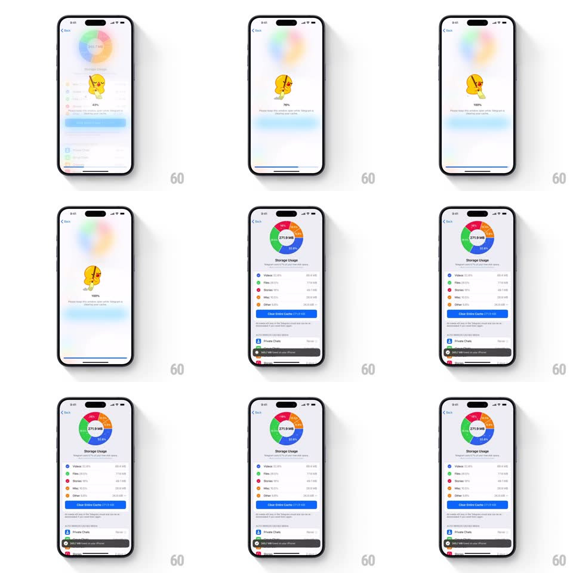

Media
Frame-by-frame

Rebuild this interaction 1:1: Telegram's clear-cache sequence - tapping Clear Entire Cache melts the Storage Usage page into a blurred backdrop with a sweeping broom mascot and a counting percentage, then returns to the page with the shrunken chart and a freed-space toast.

Rebuild this interaction 1:1: Telegram's clear-cache sequence - tapping Clear Entire Cache melts the Storage Usage page into a blurred backdrop with a sweeping broom mascot and a counting percentage, then returns to the page with the shrunken chart and a freed-space toast.
## Integration
Integration: stack-agnostic spec - springs given as stiffness/damping, timed motions as duration + curve; map every value to your framework and animation library of choice.
## Scene
The Storage Usage page: a donut chart (345.7 MB at center, colored segments - Misc orange, Videos blue, Files green, Stories pink, Other), a legend list with per-category sizes, a blue "Clear Entire Cache 345.7 MB" button, and a cached-media list below (Private Chats, Group Chats, Channels). The clearing state overlays the blurred page with a yellow mascot sweeping with a broom, a percentage readout (43% -> 80% -> 100%), and a caption. End state: chart re-renders at 271.9 MB with a dark toast "345.7 MB freed on your device".
## Motion spec
Pattern: full-screen progress takeover.
- Tap Clear Entire Cache: the page blurs and dims behind (300ms), the donut's colors ghost into a soft radial blur, and the mascot scales in (0.7 -> 1, spring ~360/18, 350ms).
- The mascot sweeps in a loop: broom strokes left-right (rotate +/- 10deg at the shoulder, 600ms per stroke) with dust puffs at the broom head.
- The percentage counts up under the mascot, easing - quick to 80%, slower crawl to 100% (total ~2.5s).
- Completion: mascot pops out (scale + fade, 250ms), blur lifts, and the page re-renders - the donut re-animates its arcs to the new smaller values (stroke draw, 500ms) and the center total ticks down from 345.7 to 271.9 MB.
- The toast slides up from the bottom (spring ~380/22), holds 2.5s, slides away.
## Calibration
- The blur transition is the container for the whole operation - never cut between page and overlay.
- The count-up should track real progress when known, simulated ease otherwise - never jump backward.
## Reduced motion
Simple progress bar over a dimmed page; toast fades.
## Don't miss
- The button's label carries the exact bytes ("Clear Entire Cache 345.7 MB") and disables during clearing.
- The toast matches the dark snackbar style and sits above the tab bar.